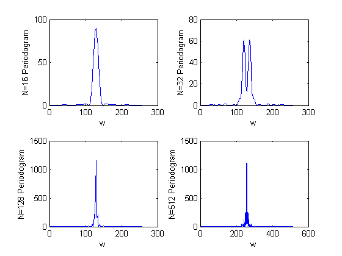
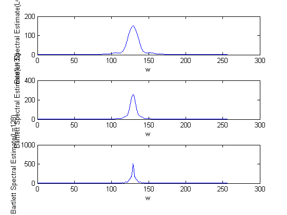
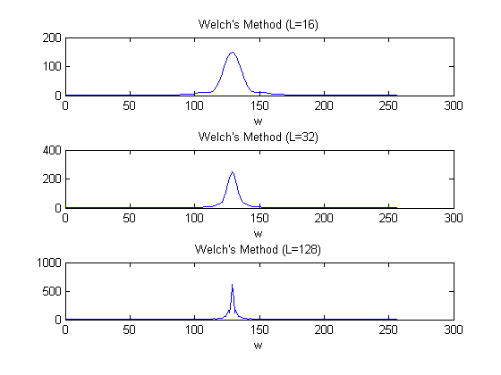
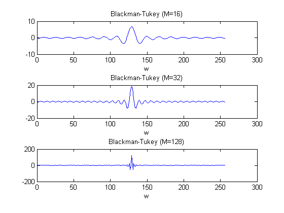
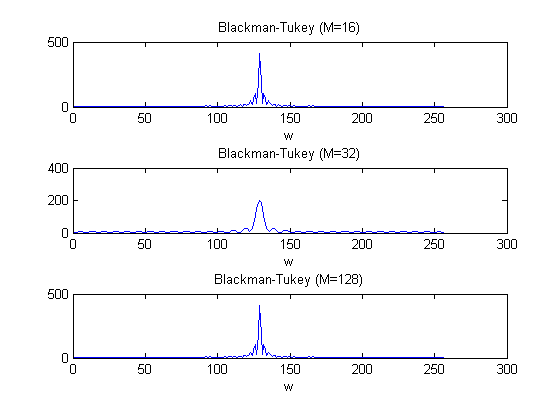

EE779: Assignment 1
Ashwin Kachhara, 10d070048
Contents
Reading the signal from DAT file
S = getdata('assgn1_data/S03.DAT');
Periodogram
N = 16
N = 16; y = zeros(256,1); y(1:N) = S(1:N); temp = abs(fft(y)).^2; per16 = temp/N;
N = 32
N = 32; y = zeros(256,1); y(1:N) = S(1:N); temp = abs(fft(y)).^2; per32 = temp/N;
N = 128
N = 128; y = zeros(256,1); y(1:N) = S(1:N); temp = abs(fft(y)).^2; per128 = temp/N;
N = 512
N = 512; temp = abs(fft(S, N)).^2; per512 = temp/N;
Plotting
figure(1) subplot(2,2,1); plot(per16); xlabel('w'); ylabel('N=16 Periodogram'); subplot(2,2,2); plot(per32); xlabel('w'); ylabel('N=32 Periodogram'); subplot(2,2,3); plot(per128); xlabel('w'); ylabel('N=128 Periodogram'); subplot(2,2,4); plot(per512); xlabel('w'); ylabel('N=512 Periodogram');
Bartlett's Method
Periodogram Averaging using various subsequence lengths from 16 to 128
L = 16; K = 32; sum = zeros(1, 256); for i=1:K lower = 1+(i-1)*L; upper = (i)*L; sum = sum + (abs(fft(S(lower:upper), 256)).^2); end bart16 = sum/(K*L); L = 32; K = 16; sum = zeros(1, 256); for i=1:K lower = 1+(i-1)*L; upper = (i)*L; sum = sum + (abs(fft(S(lower:upper), 256)).^2); end bart32 = sum/(K*L); L = 128; K = 4; sum = zeros(1, 256); for i=1:K lower = 1+(i-1)*L; upper = (i)*L; sum = sum + (abs(fft(S(lower:upper), 256)).^2); end bart128 = sum/(K*L);
Plotting
figure(2); subplot(3,1,1); plot(bart16); xlabel('w'); ylabel('Bartlett Spectral Estimate(L=16)'); subplot(3,1,2); plot(bart32); xlabel('w'); ylabel('Bartlett Spectral Estimate(L=32)'); subplot(3,1,3); plot(bart128); xlabel('w'); ylabel('Bartlett Spectral Estimate(L=128)');
Welch's Method
Similar to Bartlett's method but using overlapping subsequences with overlap=L/2 where L may be 16, 32 or 128
L = 16; D = L/2; K = fix((512-L)/D+1); w = rectwin(256); P = mean(w.^2); sum = zeros(256, 1); for i=1:K sum = sum +abs(fft(S((1+(i-1)*D):(L+(i-1)*D)), 256)'.*w).^2; end wel16 = sum/(K*L*P); L = 32; D = L/2; K = fix((512-L)/D+1); w = rectwin(256); P = mean(w.^2); sum = zeros(256, 1); for i=1:K sum = sum +(abs(fft(S((1+(i-1)*D):(L+(i-1)*D)), 256)'.*w).^2); end wel32 = sum/(K*L*P); L = 128; D = L/2; K = fix((512-L)/D+1); w = rectwin(256); P = mean(w.^2); sum = zeros(256, 1); for i=1:K sum = sum +(abs(fft(S((1+(i-1)*D):(L+(i-1)*D)), 256)'.*w).^2); end wel128 = sum/(K*L*P); figure(3); subplot(3,1,1); plot(wel16); title('Welch''s Method (L=16)'); xlabel('w'); subplot(3,1,2); plot(wel32); title('Welch''s Method (L=32)'); xlabel('w'); subplot(3,1,3); plot(wel128); title('Welch''s Method (L=128)'); xlabel('w');
Blackman-Tukey Method
Periodogram Smoothing by windowing the signal
Bartlett Window
r = xcorr(S, 'biased'); M=16; w = bartlett(256); rz = zeros(256,1); rz(1:1+M-1) = r(512:512+M-1);%Zero padding rw = rz.*w; blt16 = real(fft(rw)); M=32; w = bartlett(256); rz = zeros(256,1); rz(1:1+M-1) = r(512:512+M-1);%Zero padding rw = rz.*w; blt32 = real(fft(rw)); M=128; w = bartlett(256); rz = zeros(256,1); rz(1:1+M-1) = r(512:512+M-1);%Zero padding rw = rz.*w; blt128 = real(fft(rw)); figure(4); subplot(3,1,1); plot(blt16); title('Blackman-Tukey (M=16)'); xlabel('w'); subplot(3,1,2); plot(blt32); title('Blackman-Tukey (M=32)'); xlabel('w'); subplot(3,1,3); plot(blt128); title('Blackman-Tukey (M=128)'); xlabel('w');
Rectangular Window
w = rectwin(256); rz = zeros(256,1); rz(1:1+M-1) = r(512:512+M-1);%Zero padding rw = rz.*w; blt16 = real(fft(rw)); M=32; w = rectwin(256); rz = zeros(256,1); rz(1:1+M-1) = r(512:512+M-1);%Zero padding rw = rz.*w; blt32 = real(fft(rw)); M=128; w = rectwin(256); rz = zeros(256,1); rz(1:1+M-1) = r(512:512+M-1);%Zero padding rw = rz.*w; blt128 = real(fft(rw)); figure(5); subplot(3,1,1); plot(blt16); title('Blackman-Tukey (M=16)'); xlabel('w'); subplot(3,1,2); plot(blt32); title('Blackman-Tukey (M=32)'); xlabel('w'); subplot(3,1,3); plot(blt128); title('Blackman-Tukey (M=128)'); xlabel('w');
Conclusions
Comparison
A crude estimate of resolution is the number of peaks visible. This might not be the best way as there may be false peaks. According to this hypothesis, resolution of Blackman-Tukey > Welch > Bartlett
Correspondingly, due to tradeoff between resolution and variance, the variance of Bartlett < Welch < Blackman-Tukey.
Welch and Bartlett are almost similar, of course Bartlett is just a special case of Welch's method with zero overlap.
In Blackman-Tukey, the rectangular window version has much lesser main lobe width so it may give better estimate by not masking oscillations. The triangular windowed version visibly has a much lower decay rate of side lobes
Overall, because of periodogram smoothing, Blackman-Tukey has much less variance than periodogram and the best resolution among all the methods. Blackman-Tukey gives the best PSD estimate.
Inference about the signal
Judging by the fact that the PSD is concentrated around a single frequency, the signal seems to be like a sinusoid or a 'band-pass' signal.